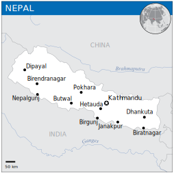
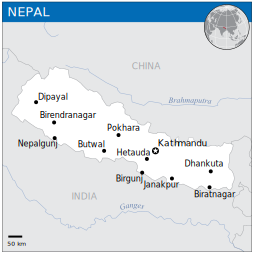

Welcome
About Nepal:
 

Nepal (Nepali: नेपाल ), officially the Federal Democratic Republic of Nepal (Nepali: सङ्घीय लोकतान्त्रिक गणतन्त्र नेपाल or Sanghiya Loktāntrik Ganatantra Nepāl), is a landlocked country in South Asia. It is located mainly in the Himalayas but also includes parts of the Indo-Gangetic Plain. With an estimated population of 26.4 million, it is 48th largest country by population and 93rd largest country by area. It borders China in the north and India in the south, east, and west while Bangladesh is located within only 27 km (17 mi) of its southeastern tip and Bhutan is separated from it by the Indian state of Sikkim. Nepal has a diverse geography, including fertile plains, subalpine forested hills, and eight of the world's ten tallest mountains, including Mount Everest, the highest point on Earth. Kathmandu is the nation's capital and largest city. Nepal is a multiethnic nation with Nepali as the official language.
Tourism is the largest industry in Nepal and its largest source of foreign exchange and revenue. Possessing eight of the ten highest mountains in the world, Nepal is a hotspot destination for mountaineers, rock climbers and people seeking adventure. The Hindu and Buddhist heritage of Nepal and its cool weather are also strong attractions.
Himalaya and Mount Everest as seen from space. Nepal has 8 of the 10 highest mountains in the world. Mount Everest, the highest mountain peak in the world, is located in Nepal. Mountaineering and other types of adventure tourism and ecotourism are important attractions for visitors. The world heritage site Lumbini, birthplace of Gautama Buddha, is located in the south of the West region of Nepal (which despite the name is located in the centre of the country) and there are other important religious pilgrimage sites throughout the country. The tourist industry is seen as a way to alleviate poverty and achieve greater social equity in the country. Tourism brings $471m a year to Nepal.
According to statistics of 2012, there was a slow growth rate of 9.8%. According to statistics from Nepal Tourism Board (NTB), a total of 598,204 foreign tourists entered the country via aerial route in 2012. The government of Nepal declared 2011 to be Nepal Tourism Year, and hoped to attract one million foreign tourists to the country during that year. The government of Nepal has also declared Lumbini Tourism Year 2012 to promote Lumbini.